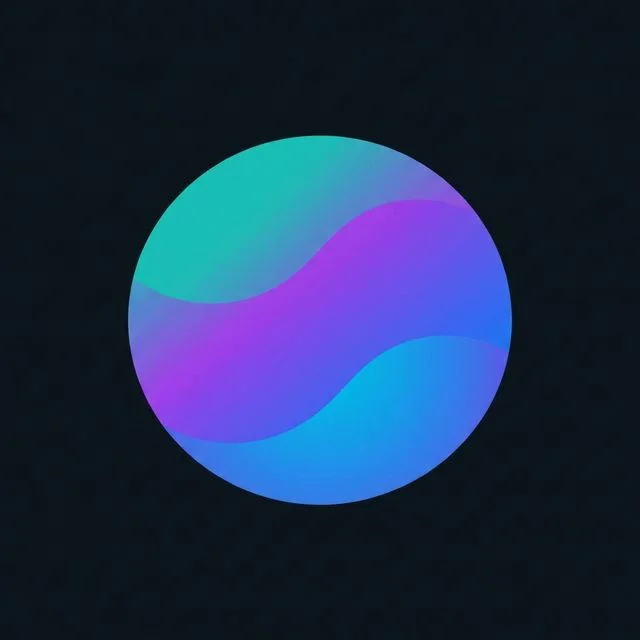

A dreamy 60s date turns into a cartoon universe of romance, fantasy, and a future montage, all inside one catchy track. This project explores "dual reality" storytelling: ultra-realistic cinematic scenes establish the couple's date-night warmth, then the world breaks into a Family Guy–style fantasy.
A dual-reality love story where 1960s romance meets cartoon fantasy
A Sinhala rap classic reimagined as retro 60s Doo-wop pop
This project is built around "මල්" by Killer B featuring Iraj, a playful Sinhala rap track from 2014 about collecting flowers and a different experience presented in rap style. The song's cheeky energy, colorful imagery of flowers in every shade, and its street-market swagger made it the perfect foundation for a retro reimagination, transforming its urban hip-hop swagger into a bouncy 2026 Doo-wop Pop anthem with finger snaps, upright bass, handclaps, and bright brass sections.
From Sinhala street rap to 1960s Doo-wop Pop with a cheeky twist
The reimagination preserved the song's playful spirit, the colorful flower imagery, the cheeky street vendor energy, the "Mary Jane" wordplay, while transporting everything into a bouncy 1960s Doo-wop universe: translating the attitude turned Sinhala rap swagger into sassy finger-snapping hooks and call-and-response vocals, restructuring the flow into upbeat verses with handclap-driven choruses and a theatrical spoken bridge, and reimagining the sonic palette from modern hip-hop to a Meghan Trainor–style retro soul with upright bass, baritone saxophone, bright brass sections, and sweet playful vocals.
Dual-reality storytelling: cinematic realism meets cartoon fantasy
"Come to the Moon Baby" is an ambitious dual-reality narrative experiment. The story follows a young couple on a 1960s date night. Ultra-realistic cinematic scenes establish warmth and romance, then the world breaks into a Family Guy–style cartoon fantasy where the relationship expands into symbolic life milestones: floating through fantasy skies, visiting world landmarks, a cartoon wedding, buying a house, road trips, and running a coffee shop together.
The production approach was optimized for Veo's 8-second generation limits, splitting complex actions into clean fragments, maintaining consistent character identity with reference images, and letting post-editing create motion, emotion, and continuity. The real-world scenes use golden-hour 1960s suburban aesthetics, while the cartoon scenes employ clean Family Guy–style flat animation with bright colors and simple movement.
26 images documenting the complete character and asset creation process
55+ scenes across dual realities, choreographed to bouncy Doo-wop
The real-world story begins. Two separate lives converge: the girl gets ready in her 1960s bedroom, the boy adjusts his shirt beside his vintage car. Classic date-night anticipation built through parallel editing.
Mirror reflection → door handle closeup → low car angle
Late afternoon sunlight, golden hour suburban warmth
"1960s suburban house exterior during golden evening… warm natural sunlight… soft shadows on the porch"
Scene Details: Girl at vanity mirror (0:00–0:08) → Door close (0:08–0:16) → Boy shirt adjustment (0:16–0:24) → Entering car (0:24–0:32) → Girl walking on pavement (0:32–0:40). Each 8-second fragment optimized for Veo's generation window.
The couple unites. He picks her up, they drive through sunset suburbs, arrive at the house. The windshield shot, with the camera moving at the same speed as the car, creates the first sustained two-shot of the couple together.
Wide approach → passenger side → front windshield → rear tracking
"Camera centered on windshield… moving at same speed as car… boy drives on left, girl on right"
Maintaining character identity through car windows and reflections
Scene Details: Car arrives & she gets in (0:40–0:48) → Driving through sunset (0:48–0:56) → Front windshield two-shot (0:56–1:04) → Rear tracking toward sunset (1:04–1:12) → Car enters yard (1:12–1:20).
The emotional pivot of the entire project. The couple settles into the 1960s living room, close-ups build intimacy, then reality breaks and the world shifts into Family Guy-style cartoon. The confused cartoon girl, the fantasy doorway, the first flight into the sky.
Slow push → extreme close-ups → static cartoon framing
Photorealistic → Family Guy flat animation
Seamless reality-to-cartoon character identity transfer
Living Room Arrival (1:20–1:28): They sit facing each other on sofa and armchair. Subtle camera push forward. Smiling, leaning forward with excitement.
Emotional Close-Ups (1:28–1:44): Cross-cut close-ups of each character. Warm sunset light on one side of their faces. Pure emotion, minimal movement.
The Reality Break (1:44–1:52): Cartoon girl appears confused. Cartoon boy sits calmly. The world has shifted with a smooth transition from realistic to animated.
Fantasy Doorway (1:52–2:00): The cartoon girl opens the front door to reveal a bright fantasy world with flowers, butterflies, and a rainbow. The threshold between realities.
The cartoon fantasy expands. The couple lifts off, floats through fantasy skies, visits world landmarks (Paris, Rio, Taj Mahal), and dreams of a future together: wedding, ring ceremony, gentle hug in a flower garden.
Side angle lift-off → behind floating → above landmarks
"Animated cartoon style similar to Family Guy… bright fantasy sky with soft clouds"
Lift off → Sky float → World tour → Wedding → Ring
Scene Details: Lift off from doorway (2:00–2:08) → Floating in sky, two-shot (2:08–2:16) → France/Eiffel Tower (2:16–2:20) → Brazil/Christ the Redeemer (2:20–2:24) → India/Taj Mahal (2:24–2:28) → Wedding moment (2:28–2:32) → Ring placement (2:32–2:36) → Gentle hug (2:36–2:40).
The cartoon future continues with a "Sold" sign on a house, road trips, mountain hiking, running a coffee shop together. Intercut with real-world scenes of the couple on the couch, dancing, sitting at a café, perched on the car bonnet at sunset.
Medium-wide static shots → slow pullbacks
Cartoon milestones intercut with real-world romance
Wide, side, close-up, slow spin: 4 angles
Scene Details: Cartoon house purchase (2:40–2:44) → Cartoon road trip (2:44–2:48) → Mountain hiking (2:48–2:52) → Coffee shop (2:52–2:56) → Real: dance sequence, 4 angles (2:56–3:12) → Real: café & car bonnet sunset (3:12–3:20).
The couple returns to reality. Lying on the couch with distant, dreamy expressions, they slowly wake up. The cartoon world offers one final image: walking together down a road covered in flowers toward the sunset. The visual thesis: love is the flower, imagination is the journey.
Close-up → gentle pullback → static cartoon wide
"She slowly opens her eyes and looks around the room with a slightly confused expression"
Matching wakeup shots for visual symmetry
Dreamy Haze (3:20–3:28): Both lying on couch with distant expressions. Eyes slightly red and unfocused. Warm sunset fills the room with light haze visible.
Girl Wakes Up (3:28–3:36): Close-up, she slowly opens eyes with confusion. Camera gently pulls back to reveal the living room. The dream ends.
Boy Wakes Up (3:36–3:44): Matching shot, he opens eyes calmly. Both returning from the shared fantasy simultaneously.
Flower Road Finale (3:44–End): Final cartoon scene where the couple walks hand-in-hand down a flower-covered road at sunset, seen from behind. The camera remains still as they walk into the distance. The Flower Song made visual.
Solving the hardest problems in dual-reality generative storytelling
Problem: Maintaining recognizable character identity when switching from photorealistic live-action to Family Guy-style flat cartoon animation. The AI generates entirely different-looking characters in each style.
Solution: Created separate reference image sets for each reality, realistic reference photos for live-action scenes and cartoon character sheets for animated scenes. Used consistent clothing colors, hairstyles, and poses as visual anchors across both styles.
Solved: Dual-Identity Reference SystemProblem: Veo's 8-second generation limit means complex actions (entering a car, picking someone up, driving away) must be split across multiple clips that feel continuous.
Solution: Designed each scene as a self-contained "moment" with clear start and end states. Used consistent lighting, camera angle families, and character positioning to create seamless visual flow in DaVinci Resolve post-editing.
Solved: Fragment-Based Narrative DesignProblem: Family Guy-style cartoon characters tend toward exaggerated slapstick motion. The story required calm, gentle, romantic movement: holding hands, gentle floating, soft smiles.
Solution: Added explicit constraints: "No jumping. No spinning. Just a calm hug." "Minimal movement." "The camera is completely still." Reducing motion complexity to near-zero yielded the gentle romantic energy needed.
Solved: Minimal Motion PromptingProblem: Front windshield driving shots consistently placed drivers on the wrong side, swapped characters, or generated blurry reflections that obscured the faces.
Solution: Used identity-locked prompts: "The driver is the young man from the reference image, seated on the left side with both hands on the steering wheel. The passenger is the young woman from the reference image, seated on the right side." Explicit side assignment solved positional confusion.
Solved: Identity-Locked PositioningProblem: Cutting between photorealistic and cartoon styles felt jarring and broke the viewer's emotional investment in both worlds.
Solution: Used the dreamy close-ups (red eyes, unfocused gaze) as "transition bridges" where the viewer sees the character's altered state before the style switch, creating a psychological justification for the reality break. The couch scenes became the portal.
Solved: Transition Bridge TechniqueFrom raw AI generation to seamless dual-reality presentation
All 55+ scenes upscaled using Topaz Gigapixel Upscaler to achieve crisp, high-fidelity output. Frame rate interpolation ensures smooth motion across both photorealistic and cartoon sequences. The upscaling is particularly critical for the cartoon scenes, where flat colors and clean lines must remain sharp at higher resolutions.
All footage edited in DaVinci Resolve with precise synchronization to the bouncy Doo-wop score generated by SUNO Pro. Cuts align to musical accents: finger snaps trigger scene changes, brass hits mark reality switches, and the walking bassline during the bridge accompanies the spoken theatrical breakdown. The 115 BPM tempo dictates the edit rhythm throughout.
DaVinci Resolve's color grading unified the dual visual palettes: warm golden-hour tones for the 1960s real-world scenes and bright, saturated flat colors for the cartoon fantasy. The transition moments use subtle color shifts to smooth the reality breaks. The "dreamy haze" scenes received special attention to create the liminal space between both worlds.
Project Reflection: "Come to the Moon Baby" demonstrates that AI-generated video can sustain dual visual identities, photorealistic and cartoon, within a single coherent narrative. The key insight was treating each 8-second generation as a storytelling unit, not a limitation. By designing scenes as self-contained emotional moments and using post-production to create continuity, the 55+ fragments become a seamless love story that bounces between dream and reality, exactly like the song itself.
The creative arsenal behind Come to the Moon Baby
Creative Direction & Writing
Prompt Engineering
Character & Asset Generation
Video Generation Engine
AI Workflow Automation
Image & Video Upscaling
Editing & Color Grading
Doo-wop Score Generation

Storyboarding & Assets